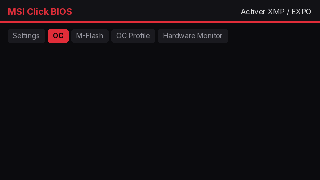

🚀 Opti Pro
Un technicien IA te guide pas à pas d’après ton matériel, et l’équipe peut intervenir à tout moment sur Discord. Tout ce que le launcher sait faire seul, il le fait pour toi, avec ta validation.
Les 7 étapes
- 🎫 Ton setup (lu automatiquement)
- ✅ Ton plan personnalisé
- 💾 Clé USB Windows (outil officiel en 1 clic)
- 🧹 Formatage propre (facultatif)
- 🧠 BIOS : mise à jour, XMP / EXPO, PBO si c’est rentable
- ⚙️ Optimisation finale de Windows et de tes jeux
- 🏁 Test et validation : FPS avant / après
Où cliquer dans TON BIOS
Une animation pour ta marque de carte mère (MSI, ASUS, Gigabyte, ASRock), sur l’appli et sur Discord.

Résultats réels de la communauté
Gains mesurés par les joueurs après leur ticket (FPS moyens avant / après, ou score de santé du PC).
- Chargement…
Inclus
- Overclocking du processeur seulement s’il est rentable sur ton PC, avec avertissement clair
- Mode express : uniquement les actions automatiques (≈ 15 min)
- Carte avant / après à partager, badge « PC optimisé par History »
- Suivi automatique chaque mois